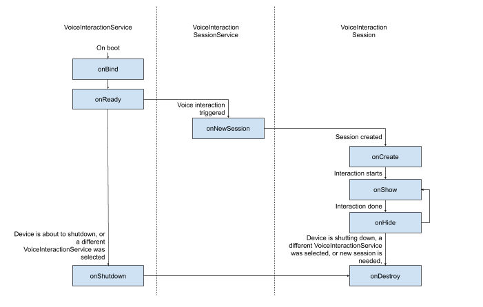
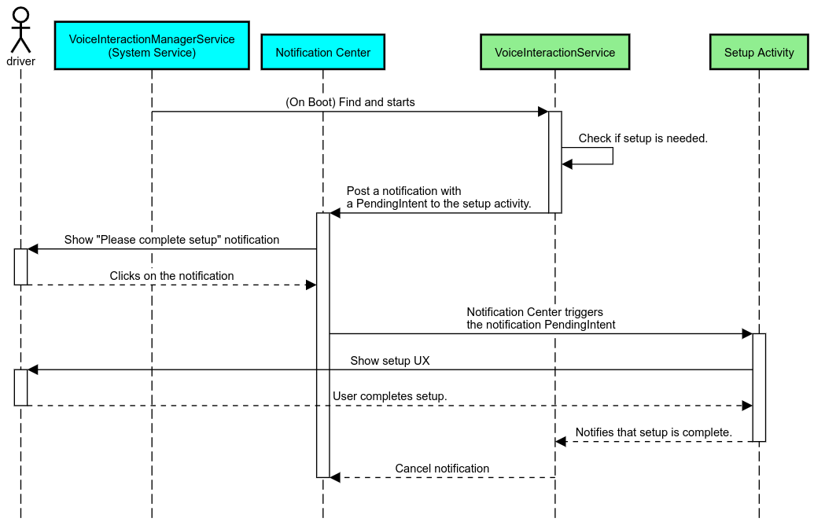
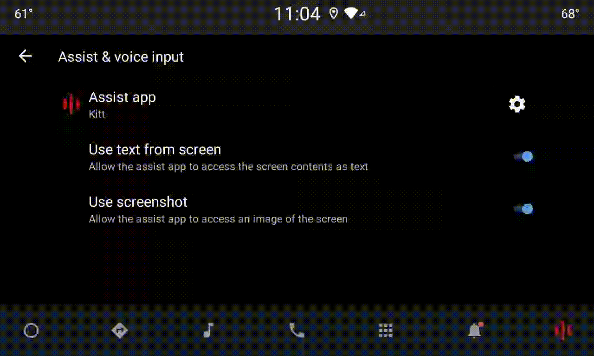
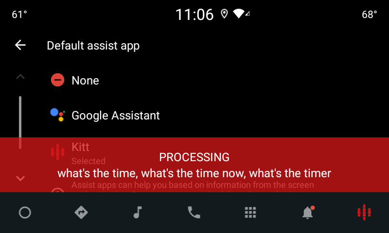

如需实现语音交互应用 (VIA)，您需要完成以下步骤：
- 创建 VIA 框架。
- （可选）实现首次设置/登录流程。
- （可选）实现“设置”屏幕。
- 在清单文件中声明必需的权限。
- 实现语音控制面板界面。
- 实现语音识别（必须包含
RecognitionService API实现）。 - 实现语音内容（可以选择性地实现
TextToSpeech API）。 - 实现命令执行。请参阅执行命令，了解这方面的内容。
创建 VIA 框架
当应用清单中包含以下内容时，该应用会被检测为具有语音交互功能。
AndroidManifest.xml
<manifest xmlns:android="http://schemas.android.com/apk/res/android"
package="com.example.myvoicecontrol">
...
<application ... >
<service android:name=".MyInteractionService"
android:label="@string/app_name"
android:permission="android.permission.BIND_VOICE_INTERACTION"
android:process=":interactor">
<meta-data
android:name="android.voice_interaction"
android:resource="@xml/interaction_service" />
<intent-filter>
<action android:name=
"android.service.voice.VoiceInteractionService" />
</intent-filter>
</service>
</application>
</manifest>
在此示例中：
- VIA 必须公开一项用于扩展
VoiceInteractionService的服务，并为VoiceInteractionService.SERVICE_INTERFACE ("android.service.voice.VoiceInteractionService")操作提供 intent 过滤器。 - 此服务必须拥有
BIND_VOICE_INTERACTION系统签名权限。 - 此服务应具有包含以下代码的
android.voice_interaction元数据文件：
res/xml/interaction_service.xml
<voice-interaction-service
xmlns:android="http://schemas.android.com/apk/res/android"
android:sessionService=
"com.example.MyInteractionSessionService"
android:recognitionService=
"com.example.MyRecognitionService"
android:settingsActivity=
"com.example.MySettingsActivity"
android:supportsAssist="true"
android:supportsLaunchVoiceAssistFromKeyguard="true"
android:supportsLocalInteraction="true" />
如需详细了解各字段，请参阅 R.styleable#VoiceInteractionService。鉴于所有的 VIA 也都属于语音识别器服务，您还必须在清单中添加以下代码：
AndroidManifest.xml
<manifest ...>
<uses-permission android:name="android.permission.RECORD_AUDIO"/>
<application ...>
...
<service android:name=".RecognitionService" ...>
<intent-filter>
<action android:name="android.speech.RecognitionService" />
<category android:name="android.intent.category.DEFAULT" />
</intent-filter>
<meta-data
android:name="android.speech"
android:resource="@xml/recognition_service" />
</service>
</application>
</manifest>
语音识别服务还需要具有以下元数据：
res/xml/recognition_service.xml
<recognition-service
xmlns:android="http://schemas.android.com/apk/res/android"
android:settingsActivity="com.example.MyRecognizerSettingsActivity" />
VoiceInteractionService、VoiceInteractionSessionService 和 VoiceInteractionSession

如前所述，VoiceInteractionService 是 VIA 的入口点。此服务的主要职责包括：
- 初始化所有应在此 VIA 处于活跃状态时保持运行的进程，例如启动指令检测。
- 报告支持的语音操作（请参阅语音助理点读功能）。
- 从锁定屏幕 (keyguard) 启动语音交互会话。
形式最简单的 VoiceInteractionService 实现如下所示：
public class MyVoiceInteractionService extends VoiceInteractionService {
private static final List<String> SUPPORTED_VOICE_ACTIONS =
Arrays.asList(
CarVoiceInteractionSession.VOICE_ACTION_READ_NOTIFICATION,
CarVoiceInteractionSession.VOICE_ACTION_REPLY_NOTIFICATION,
CarVoiceInteractionSession.VOICE_ACTION_HANDLE_EXCEPTION
);
@Override
public void onReady() {
super.onReady();
// TODO: Setup hotword detector
}
@NonNull
@Override
public Set<String> onGetSupportedVoiceActions(
@NonNull Set<String> voiceActions) {
Set<String> result = new HashSet<>(voiceActions);
result.retainAll(SUPPORTED_VOICE_ACTIONS);
return result;
}
...
}
如需处理语音助理点读功能，必须实现VoiceInteractionService#onGetSupportedVoiceActions()。系统使用 VoiceInteractionSessionService 创建 VoiceInteractionSession 并与之交互。它只有一项职责：在接到请求时发起新的会话。
public class MyVoiceInteractionSessionService extends VoiceInteractionSessionService {
@Override
public VoiceInteractionSession onNewSession(Bundle args) {
return new MyVoiceInteractionSession(this);
}
}
最后，大部分工作会在 VoiceInteractionSession 中完成。一个会话实例可能会被重复使用，以完成多个用户交互。在 AAOS 中，存在一个辅助 CarVoiceInteractionSession ，可帮助实现汽车特有的一些功能。
public class MyVoiceInteractionSession extends CarVoiceInteractionSession {
public InteractionSession(Context context) {
super(context);
}
@Override
protected void onShow(String action, Bundle args, int showFlags) {
closeSystemDialogs();
// TODO: Unhide UI and update UI state
// TODO: Start processing audio input
}
...
}
VoiceInteractionSession 包含大量的回调方法，我们将在下面的各个部分进行介绍。如需查看完整列表，请参阅介绍 VoiceInterationSession 的文档。
实现首次设置/登录流程
首次设置和登录可在以下三种情况下发生：
- 在设备初始配置期间（设置向导）。
- 在语音交互服务交换期间（设置）。
- 首次启动时（应用被选中时）。
如需详细了解推荐的用户体验和视觉指南，请参阅预加载的助理：用户体验指南。
在语音服务交换期间进行设置
用户总是有可能选择未正确配置的 VIA。出现这种情况的原因如下：
- 用户完全跳过了设置向导，或者用户跳过了语音交互配置步骤。
- 用户选择的 VIA 与设备初始配置期间配置的 VIA 不同。
在任何情况下，VoiceInteractionService 都可通过以下几种方式来鼓励用户完成设置：
- 通知提醒。
- 用户尝试使用 VIA 时的自动语音回复。
注意：在用户未明确请求的情况下，强烈建议不要显示 VIA 设置流程。这意味着在设备启动期间或者用户切换或解锁后，VIA 应避免自动在 HU 上显示内容。
- 通知提醒：通知提醒会以不干扰用户的方式来表明需要进行设置，并为用户提供一种导航到助理设置流程的途径。
https://source.android.google.cn/static/devices/automotive/images/vi_08.gif?hl=zh-cn
此流程的工作原理如下：

- 语音回复
这是实现起来最简单的流程：用
VoiceInteractionSession#onShow()回调发起语音提示，向用户说明需要执行什么操作，然后询问用户（如果根据用户体验限制状态允许进行设置）是否想要启动设置流程。如果当时无法进行设置，则对此作出解释。
首次使用时设置
用户常常有可能触发尚未正确配置的 VIA。在这种情况下：
- 请用语音告知用户这一情况（例如，“请完成几个步骤，以便我正常运行…”）。
- 如果用户体验限制引擎允许（请参阅 UX_RESTRICTIONS_NO_SETUP），请询问用户是否要启动首次设置流程，如果是，则打开 VIA 的“设置”屏幕。
- 如果不允许（例如，当用户正在驾车时），请留下一条通知，供用户在安全的情况下点击相应选项。
构建语音交互首次设置屏幕
首次设置屏幕和登录屏幕应作为常规 Activity 进行开发。请参阅预加载的助理：用户体验指南，了解有关界面开发的用户体验和视觉准则。
通用准则：
- VIA 应允许用户随时中断和恢复设置。
- 如果
UX_RESTRICTIONS_NO_SETUP限制当时有效，则不应允许进行设置。如需了解详情，请参阅有关防止驾驶员分心的准则。 - 首次设置屏幕应与每辆车的设计系统相匹配。一般屏幕布局、图标、颜色及其他方面应与界面的其余部分保持一致。如需了解详情，请参阅自定义。
设置屏幕属于常规 Android Activity。如果设置屏幕已实现，必须在 res/xml/interaction_service.xml 中将其入口点声明为 VIA 清单的一部分（请参阅清单部分）。“设置”部分非常适合用来继续进行首次设置和登录（如果用户未完成此步骤），或在需要时提供退出帐号或切换用户选项。与上述首次设置屏幕类似，这些屏幕应该：
- 提供返回屏幕堆栈中上一个屏幕（如“汽车设置”）的选项。
- 在驾车时禁止使用。如需了解详情，请参阅有关防止驾驶员分心的准则。
- 匹配各种车辆设计系统。如需了解详情，请参阅自定义。
在清单文件中声明必需的权限
VIA 需要的权限可分为三类：
- 系统签名权限。这些权限只会授予系统签名的预装 APK。用户无法授予这些权限，只有原始设备制造商 (OEM) 可以在构建系统映像时授予这些权限。如需详细了解如何获取签名权限，请参阅授予系统特许权限。
- 危险权限。这些是用户必须使用
PermissionsController对话框授予的权限。OEM 可以将其中的一些权限预先授予默认的VoiceInteractionService。但考虑到这个默认项可能会因设备而改变，应用应该能够在需要时请求这些权限。 - 其他权限。这些包括其他所有不需要用户干预的权限。这些权限将由系统自动授予。
基于上述内容，下一部分仅重点介绍请求危险权限的相关信息。只有当用户在登录或设置屏幕中时，才应请求权限。
在“设置”屏幕中请求权限
您应使用常规 ActivityCompat#requestPermission() 方法（或等效方法）请求危险权限。如需详细了解如何请求权限，请参阅请求应用权限。

通知监听器权限
为了实现 TTR 流程，必须将 VIA 指定为通知监听器。这本身并不是权限，而是允许系统向注册的监听器发送通知的配置。为了解 VIA 是否获取了对这些信息的访问权限，应用可以执行以下操作：
- （可选）使用
CarAssistUtils#assistantIsNotificationListener()提前检查是否有通知监听器。例如，您可以在设置流程中执行此操作。 - （必需）针对使用操作
VOICE_ACTION_HANDLE_EXCEPTION和异常EXCEPTION_NOTIFICATION_LISTENER_PERMISSIONS_MISSING处理CarVoiceInteractionSession#onShow()做出响应。
如果没有预先授予此访问权限，VIA 应结合使用语音提示和通知，引导用户转到“汽车设置”的“通知使用权”部分。可以使用以下代码打开设置应用的相应部分：
private void requestNotificationListenerAccess() {
Intent intent = new Intent(Settings
.ACTION_NOTIFICATION_LISTENER_SETTINGS);
intent.putExtra(Settings.EXTRA_APP_PACKAGE, getPackageName());
startActivity(intent);
}
实现语音控制面板界面
当 VoiceInteractionSession 收到 onShow() 回调时，它可以显示语音控制面板界面。如需了解有关语音控制面板实现的视觉和用户体验准则，请参阅预加载的助理：用户体验指南。

实现此界面的方式有两种：
- 覆盖
VoiceInteractionSession#onCreateContentView() - 使用
VoiceInteractionSession#startAssistantActivity()启动 Activity
使用 onCreateContentView()
这是显示语音控制面板的默认方式。只要语音会话处于活动状态，VoiceInteractionSession 基类就会创建一个窗口并管理其生命周期。应用必须覆盖 VoiceInteractionSession#onCreateContentView() 并返回一个视图，该视图将在会话创建后立即附加到该窗口。该视图最初应该是不可见的。当语音交互开始时，这个视图应该在 VoiceInteractionSession#onShow() 上变得可见，然后在 VoiceInteractionSession#onHide() 上又变得不可见。
public class MyVoiceInteractionSession extends CarVoiceInteractionSession {
private View mVoicePlate;
…
@Override
public View onCreateContentView() {
mVoicePlate = inflater.inflate(R.layout.voice_plate, null);
…
}
@Override
protected void onShow(String action, Bundle args, int showFlags) {
// TODO: Update UI state to "listening"
mVoicePlate.setVisibility(View.VISIBLE);
}
@Override
public void onHide() {
mVoicePlate.setVisibility(View.GONE);
}
…
}
使用此方法时，不妨调整 VoiceInteractionSession#onComputeInsets())，以考虑界面中被遮盖的区域。
使用 startAssistantActivity()
在此情形中，VoiceInteractionSession 会将语音控制面板界面的处理委托给一个常规的 Activity。使用此选项时，VoiceInteractionSession 实现必须对 onPrepareShow() 回调停用其默认内容窗口的创建（请参阅使用 onCreateContentView()）。在 VoiceInteractionSession#onShow() 时，会话将使用 VoiceInteractionSession#startAssistantActivity() 启动语音控制面板 Activity。此方法会使用合适的窗口设置和 Activity 标志启动界面。
public class MyVoiceInteractionSession extends CarVoiceInteractionSession {
…
@Override
public void onPrepareShow(Bundle args, int showFlags) {
super.onPrepareShow(args, showFlags);
setUiEnabled(false);
}
@Override
protected void onShow(String action, Bundle args, int showFlags) {
closeSystemDialogs();
Intent intent = new Intent(getContext(), VoicePlateActivity.class);
intent.putExtra(VoicePlateActivity.EXTRA_ACTION, action);
intent.putExtra(VoicePlateActivity.EXTRA_ARGS, args);
startAssistantActivity(intent);
}
…
}
为了让这个 Activity 与 VoiceInteractionSession 之间保持通信，可能需要一组内部 Intent 或服务绑定。例如，调用 VoiceInteractionSession#onHide() 时，会话必须能够将此请求传递给这个 Activity。
重要提示：在 Automotive 中，驾车期间只能显示带有特殊注解的 Activity 或者 UXR“许可名单”中列出的 Activity。这也适用于以 VoiceInteractionSession#startAssistantActivity() 开头的 Activity。请务必使用 <meta-data android:name="distractionOptimized" android:value="true"/> 为 Activity 添加注解，或在 /packages/services/Car/service/res/values/config.xml 文件的 systemActivityWhitelist 键中添加此 Activity。如需了解详情，请参阅有关防止驾驶员分散注意力的准则。
实现语音识别
在本部分中，您将了解如何通过检测和识别启动指令来实现语音识别。启动指令是用来通过语音启动新查询或操作的触发字词，例如“Ok Google”或“Hey Google”。
DSP 启动指令检测
Android 通过 AlwaysOnHotwordDetector 类在 DSP 级提供了对一个始终开启的启动指令检测器的访问权限。这提供了一种便捷方式，仅使用较低的 CPU 开销即可实现启动指令检测。此功能的用法分为两个部分：
AlwaysOnHotwordDetector的实例化。- 启动指令检测声音模型的注册。
VoiceInteractionService 实现可以使用 VoiceInteractionService#createAlwaysOnHotwordDetector() 创建启动指令检测器，并传递它们希望用于检测的启动指令和语言区域。因此，应用会收到 onAvailabilityChanged() 回调，其中包含下列某个可能的值：
STATE_HARDWARE_UNAVAILABLE。DSP 功能在该设备上不可用。在这种情况下，应用将使用软件启动指令检测。STATE_HARDWARE_UNSUPPORTED。DSP 支持通常不可用，而且 DSP 也不支持给定的启动指令和语言区域组合。应用可以选择使用软件启动指令检测。STATE_HARDWARE_ENROLLED。启动指令检测已就绪，可以通过调用startRecognition()方法来启动。STATE_HARDWARE_UNENROLLED。所请求的启动指令的声音模型不可用，但可以进行注册。
您可以使用 IVoiceInteractionManagerService#updateKeyphraseSoundModel() 注册启动指令检测声音模型。在给定的时间内，您可以在系统中注册多个模型，但只有一个模型会与 AlwaysOnHotwordDetector 相关联。DSP 启动指令检测可能不一定适用于所有设备。VIA 开发者应使用 getDspModuleProperties() 方法检查硬件功能。如需查看展示如何注册声音模型的示例代码，请参阅 VoiceEnrollment/src/com/android/test/voiceenrollment/EnrollmentUtil.java。如需了解并发启动指令识别，请参阅并发捕获。
软件启动指令检测
如上所述，DSP 启动指令检测可能不适用于某些设备（例如，Android 模拟器就不提供 DSP 模拟）。在这种情况下，软件语音识别是唯一的替代方案。为避免干扰其他可能需要使用麦克风的应用，VIA 必须使用以下方法访问音频输入：
- 音频捕获必须使用 MediaRecorder.AudioSource.HOTWORD。
- 拥有
android.Manifest.permission.CAPTURE_AUDIO_HOTWORD权限。
这两个常量均为 @hide，并且仅适用于捆绑应用。
管理音频输入和语音识别
音频输入将使用 MediaRecorder API 实现。如需详细了解如何使用此 API，请参阅 MediaRecorder 概览。此外，语音交互服务应该为 RecognitionService 实现。系统中任何需要语音识别功能的应用都将使用 SpeechRecognizer API 来访问此功能。为实现语音识别功能并且能使用麦克风，VIA 必须拥有 android.permission.RECORD_AUDIO 权限。此外，访问 RecognitionService 实现的应用也应拥有此权限。
在 Android 10 之前的版本中，一次只能向一个应用授予麦克风访问权限（启动指令检测除外，具体请参阅上文）。从 Android 10 开始，麦克风访问权限可以共享。如需了解详情，请参阅共享音频输入。
访问音频输出
当 VIA 准备好提供语音回复时，请务必遵循下面这一系列准则：
- 在请求音频焦点或管理音频输出时，应用必须使用
AudioAttributes#USAGE_ASSISTANT和AudioAttributes#CONTENT_TYPE_SPEECH作为音频属性。 - 在语音识别期间，必须使用
AudioManage#AUDIOFOCUS_GAIN_TRANSIENT_EXCLUSIVE请求音频焦点。请注意，某些媒体应用在其音频焦点被移除时，可能无法对媒体命令做出正确的回应（请参阅填充媒体命令）。